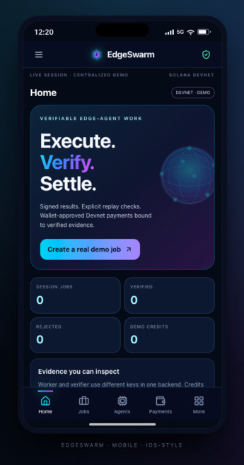

Create a bounded job
The task has a job ID, input digest, assignment, nonce, reward in demo credits and expiry.
Open-source prototype · Solana Devnet · No Mainnet funds
Create a bounded task. Check its signed result. Review a job-linked Devnet payment before your wallet signs.
Worker and verifier use different keys in one backend. Demo credits are simulated. The wallet payment is a separate direct Devnet transfer, not escrow.

The implemented workflow
The current task transforms text to uppercase. That narrow scope makes a changed output detectable by replay. It does not prove arbitrary AI inference.
The task has a job ID, input digest, assignment, nonce, reward in demo credits and expiry.
The backend worker signs the result envelope with a session-specific Ed25519 key.
A different backend key signs the verdict after signature, integrity, identity and replay checks. This is not an independent operator.
Try the tamper switch. A mismatched result is rejected and does not receive simulated credits.
A verified job can prepare one fixed 0.001 Devnet SOL transfer with an evidence-bound Memo. You choose the recipient.
The server checks the confirmed transaction against the stored intent. Export your evidence before the session expires.
Real captured screens
Three minutes, 18 captioned scenes: job creation, signed verification, rejection, payment interface, real transaction and passing CI. This is an edited screenshot walkthrough, not a continuous recording.
Animation starts only when requested. Pause restores a still image; no new transaction is sent.
One captured live transfer, not invented payout totals
An explicitly approved disposable-wallet test created and verified a job, signed the prepared transfer and Memo, and confirmed the server-checked receipt. Explorer subsequently showed it finalized.
cluster: devnet amount: 1,000,000 lamports job: 5bb0aba5-8027-461e-a3ca-52bbc64161a6 slot: 520116661 escrow: false
A direct Devnet transfer can be linked to a backend-verified job and checked against its immutable intent. Repeating confirmation returns the recorded receipt without sending a second payment.
The end-to-end transfer harness signed disposable keys in memory. Browser-wallet approval and physical Android interoperability still require dedicated testing.
Read the integration contract →Implementation, prototype, roadmap
Mobile and desktop views, PostgreSQL guest sessions, Ed25519 evidence, replay checks, tamper rejection and receipt export.
Immutable intent, exact transfer plus Memo, explicit wallet signing and server-side transaction validation.
Android source and a debug APK exist. Real-device task integration, independent operators, GossipMarket and program-enforced escrow remain future work.
For builders and reviewers
git clone https://github.com/CodesbyFebin/EdgeSwarm.git cd EdgeSwarm npm ci --ignore-scripts npm test npm run build npm start
Node.js 22 is used in CI. Local mode uses in-memory sessions; serverless deployment requires PostgreSQL configuration.
Start with repository-backed implementation guides for setup, APIs, Solana, security and Android limits.
The imported 100-page architecture library is preserved separately as an unvalidated blueprint archive. Its proposed APIs, USDC assumptions and independent-worker descriptions are not advertised as working features.
Execute. Verify. Inspect.